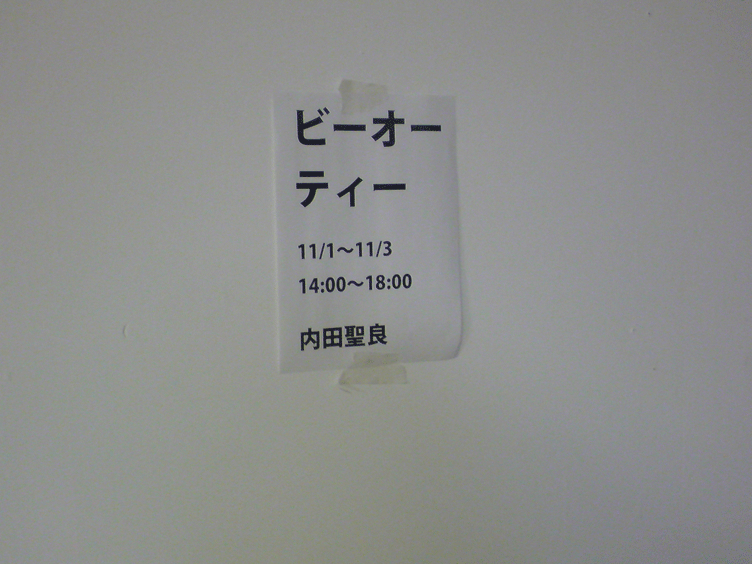

東京都小金井市／小金井アートスポットシャトー２F／2010.11
秋葉原の環境音・ラジオ・TV・紙・キーボード・その他電子部品
サウンドスケープ協力：「秋葉原の住人」の皆さん 技術協力：まりす（江川昌寿）
自分にとって嫌なものを、なくさないで関わる方法を探す
秋葉原に自主的に一ヶ月間滞在し、その中で自分にとって快適に生きるためには排除対象になる秋葉原の路上の環境音をスコアにして、空間を構成。秋葉原でであった様々な人々に協力を得た。